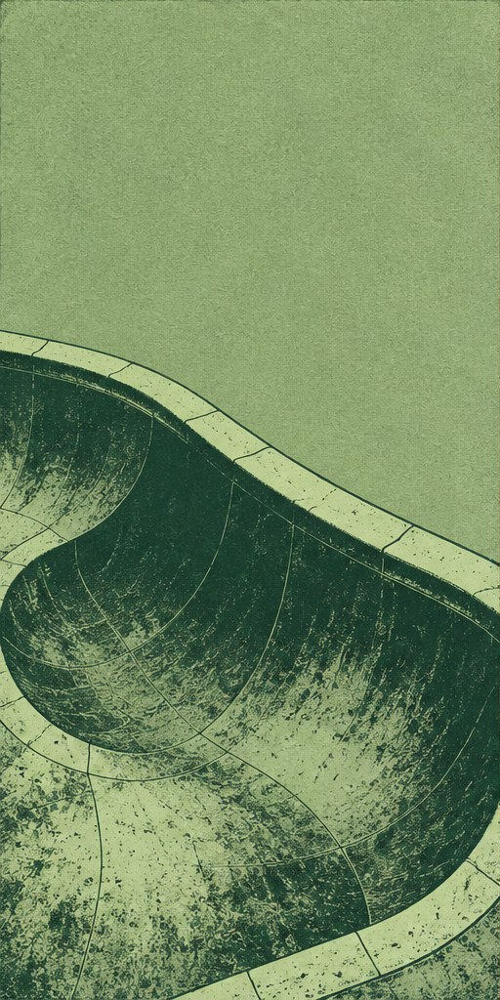
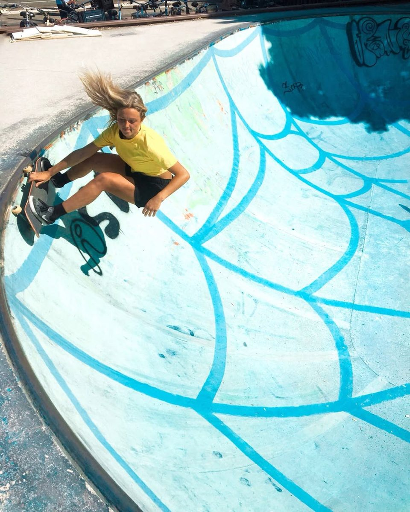
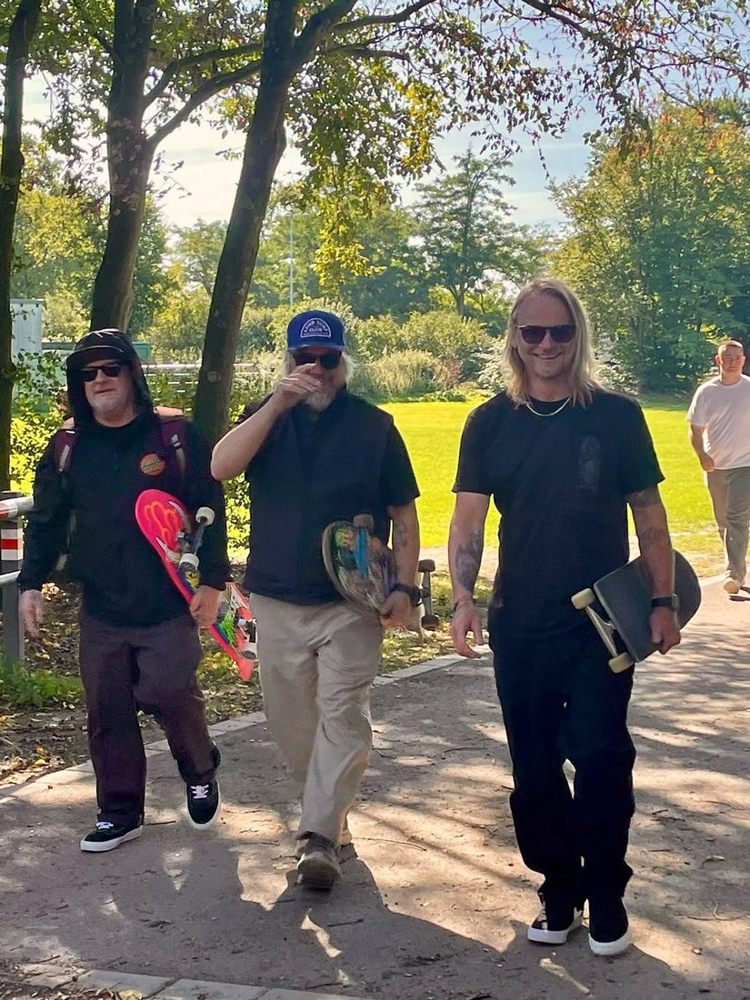

See you
at the spot.
An iPhone journal for skate days. Keep the spots you ride and the lines you want to try again.
Explore the journal
Know where
to pick up.
Save terrain and access notes in your Spot Book. Log your tries and landings so the next visit starts with a plan.
How your journal stays yours
Frontside 180
West bowl
Smooth concrete
- Tries
- 12
- Landed
- 4
- Goal
- 6
An example trick log. Make your own in Nina.
Keep the
good stuff.
Photos and clips from the Nina collection. Save the ones that make you want to skate again.

Blue pool carve
Park

Along for the session
Off the board
Boards at the steps
Street
A few frames from the collection included with Nina.
Before
you roll.
The useful details, all in one place.
Can I use Nina offline?
Your journal and the included photos and clips work offline. Apple sign-in and in-app purchases use Apple’s services.
What does Crew share?
Crew keeps conversations and follow, comment and report actions in the journal on this iPhone. Profiles stored in the same app can exchange messages after both follow each other. Nina does not sync or deliver messages to other devices. The call screen is a waiting preview.
How do I delete my profile?
In Nina, open Crew, then Settings. Choose Delete profile and confirm. This clears your profile and its saved content from Nina on that iPhone.